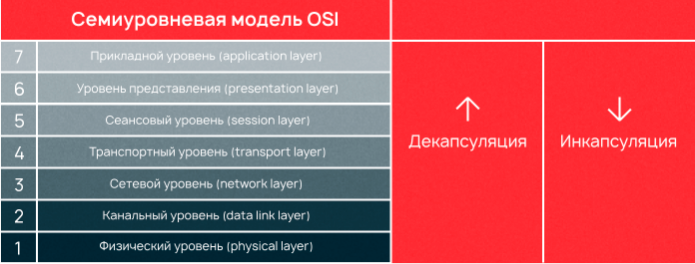
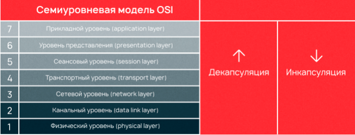
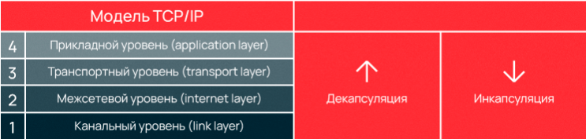
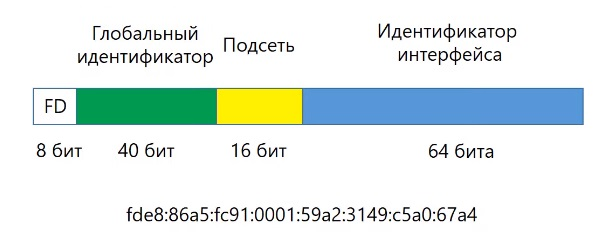

Основы TCP/IP
Стек протоколов TCP/IP (Transmission Control Protocol/Internet Protocol, протокол управления передачей/протокол интернета) — сетевая модель, описывающая процесс передачи цифровых данных. Она названа по двум главным протоколам, по этой модели построена
глобальная сеть — интернет. Сейчас это кажется невероятным, но в 1970-х информация не могла быть передана из одной сети в другую, с целью обеспечить такую возможность был разработан стек интернет-протоколов также известный как TCP/IP.
Разработкой этих протоколов занималось Министерство обороны США, поэтому иногда модель TCP/IP называют DoD (Department of Defence) модель. Если вы знакомы с моделью OSI, то вам будет проще понять построение модели TCP/IP, потому что обе модели имеют деление на уровни, внутри которых действуют определенные протоколы и выполняются собственные функции. Мы разделили статью на смысловые части, чтобы было проще понять, как устроена модель TCP/IP:
Разработкой этих протоколов занималось Министерство обороны США, поэтому иногда модель TCP/IP называют DoD (Department of Defence) модель. Если вы знакомы с моделью OSI, то вам будет проще понять построение модели TCP/IP, потому что обе модели имеют деление на уровни, внутри которых действуют определенные протоколы и выполняются собственные функции. Мы разделили статью на смысловые части, чтобы было проще понять, как устроена модель TCP/IP:
Модель OSI
Открытая сетевая модель OSI (Open Systems Interconnection model) состоит из семи уровней. Что это за уровни, как устроена модель и какова ее роль при построении сетей — в статье.
Модель OSI является эталонной. Эталонная она потому, что полное название модели выглядит как «Basic Reference Model Open Systems Interconnection model», где Basic Reference Model означает «эталонная модель». Вначале рассмотрим общую информацию, а потом перейдем к частным аспектам.
Сетевая модель OSI имеет семь уровней, иерархически расположенных от большего к меньшему. То есть, самым верхним является седьмой (прикладной), а самым нижним — первый (физический). Модель OSI разрабатывалась еще в 1970-х годах, чтобы описать архитектуру и принципы работы сетей передачи данных. Важно помнить, что данные передаются не только по сети интернет, но и в локальных сетях с помощью проводных или беспроводных соединений.
В процессе передачи данных всегда участвуют устройство-отправитель, устройство-получатель, а также сами данные, которые должны быть переданы и получены. С точки зрения рядового пользователя задача элементарна — нужно взять и отправить эти данные. Все, что происходит при отправке и приеме данных, детально описывает семиуровневая модель OSI.
На седьмом уровне информация представляется в виде данных, на первом — в виде бит. Процесс, когда информация отправляется и переходит из данных в биты, называется инкапсуляцией. Обратный процесс, когда информация, полученная в битах на первом уровне, переходит в данные на седьмом, называется декапсуляцией. На каждом из семи уровней информация представляется в виде блоков данных протокола — PDU (Protocol Data Unit).
Рассмотрим на примере: пользователь 1 отправляет картинку, которая обрабатывается на седьмом уровне в виде данных, данные должны пройти все уровни до самого нижнего (первого), где будут представлены как биты. Этот процесс называется инкапсуляцией. Компьютер пользователя 2 принимает биты, которые должны снова стать данными. Этот обратный процесс называется декапсуляция. Что происходит с информацией на каждом из семи уровней, как и где биты переходят в данные мы разберем в этой статье. 
Модель OSI является эталонной. Эталонная она потому, что полное название модели выглядит как «Basic Reference Model Open Systems Interconnection model», где Basic Reference Model означает «эталонная модель». Вначале рассмотрим общую информацию, а потом перейдем к частным аспектам.
Сетевая модель OSI имеет семь уровней, иерархически расположенных от большего к меньшему. То есть, самым верхним является седьмой (прикладной), а самым нижним — первый (физический). Модель OSI разрабатывалась еще в 1970-х годах, чтобы описать архитектуру и принципы работы сетей передачи данных. Важно помнить, что данные передаются не только по сети интернет, но и в локальных сетях с помощью проводных или беспроводных соединений.
В процессе передачи данных всегда участвуют устройство-отправитель, устройство-получатель, а также сами данные, которые должны быть переданы и получены. С точки зрения рядового пользователя задача элементарна — нужно взять и отправить эти данные. Все, что происходит при отправке и приеме данных, детально описывает семиуровневая модель OSI.
На седьмом уровне информация представляется в виде данных, на первом — в виде бит. Процесс, когда информация отправляется и переходит из данных в биты, называется инкапсуляцией. Обратный процесс, когда информация, полученная в битах на первом уровне, переходит в данные на седьмом, называется декапсуляцией. На каждом из семи уровней информация представляется в виде блоков данных протокола — PDU (Protocol Data Unit).
Рассмотрим на примере: пользователь 1 отправляет картинку, которая обрабатывается на седьмом уровне в виде данных, данные должны пройти все уровни до самого нижнего (первого), где будут представлены как биты. Этот процесс называется инкапсуляцией. Компьютер пользователя 2 принимает биты, которые должны снова стать данными. Этот обратный процесс называется декапсуляция. Что происходит с информацией на каждом из семи уровней, как и где биты переходят в данные мы разберем в этой статье. 
Модель TCP/IP
Уровневая модель TCP/IP
Выше мы уже упоминали, что модель TCP/IP разделена на уровни, как и OSI, но отличие двух моделей в количестве уровней. Документом, регламентирующим уровневую архитектуру модели и описывающий все протоколы, входящие в TCP/IP, является RFC 1122. Стандарт включает четыре уровня модели TCP/IP, хотя, например, согласно Таненбауму (Таненбаум Э., Уэзеролл Д. Т18 Компьютерные сети. 5-е изд. — СПб.: Питер, 2012. — 960 с.: ил. ISBN 978-5-459-00342-0), в модели может быть пять уровней.Три верхних уровня — прикладной, транспортный и сетевой — присутствуют как в RFC, так и у Таненбаума и других авторов. А вот стоит ли говорить только о канальном или о канальном и физическом уровнях — нет единого мнения. В RFC они объединены, поскольку выполняют одну функцию. В статье мы придерживаемся официального интернет-стандарта RFC и не выделяем физический уровень в отдельный. Далее мы рассмотрим четыре уровня модели.
Канальный уровень (link layer)
Предназначение канального уровня — дать описание тому, как происходит обмен информацией на уровне сетевых устройств, определить, как информация будет передаваться от одного устройства к другому. Информация здесь кодируется, делится на пакеты и отправляется по нужному каналу, т.е. среде передачи.Этот уровень также вычисляет максимальное расстояние, на которое пакеты возможно передать, частоту сигнала, задержку ответа и т.д. Все это — физические свойства среды передачи информации. На канальном уровне самым распространенным протоколом является Ethernet, но мы рассмотрим его на примере в конце статьи.
Межсетевой уровень (internet layer)
Каждая индивидуальная сеть называется локальной, глобальная сеть интернет позволяет объединить все локальные сети. За объединение локальных сетей в глобальную отвечает сетевой уровень. Он регламентирует передачу информации по множеству локальных сетей, благодаря чему открывается возможность взаимодействия разных сетей.Межсетевое взаимодействие — это основной принцип построения интернета. Локальные сети по всему миру объединены в глобальную, а передачу данных между этими сетями осуществляют магистральные и пограничные маршрутизаторы.
Транспортный уровень (transport layer)
Постоянные резиденты транспортного уровня — протоколы TCP и UDP, они занимаются доставкой информации.TCP (протокол управления передачей) — надежный, он обеспечивает передачу информации, проверяя дошла ли она, насколько полным является объем полученной информации и т.д. TCP дает возможность двум хостам производить обмен пакетами через установку соединения. Он предоставляет услугу для приложений, повторно запрашивает потерянную информацию, устраняет дублирующие пакеты, регулируя загруженность сети. TCP гарантирует получение и сборку информации у адресата в правильном порядке.
UDP (протокол пользовательских датаграмм) — ненадежный, он занимается передачей автономных датаграмм. UDP не гарантирует, что всех датаграммы дойдут до получателя. Датаграммы уже содержат всю необходимую информацию, чтобы дойти до получателя, но они все равно могут быть потеряны или доставлены в порядке отличном от порядка при отправлении.
UDP обычно не используется, если требуется надежная передача информации. Использовать UDP имеет смысл там, где потеря части информации не будет критичной для приложения, например, в видеоиграх или потоковой передаче видео. UDP необходим, когда делать повторный запрос сложно или неоправданно по каким-то причинам.
Протоколы L3 не интерпретируют информацию, полученную с верхнего или нижних уровней, они служат только как канал передачи, но есть исключения. RSVP (Resource Reservation Protocol, протокол резервирования сетевых ресурсов) может использоваться, например, роутерами или сетевыми экранами в целях анализа трафика и принятия решений о его передаче или отклонении в зависимости от содержимого.
Прикладной уровень (application layer)
В модели TCP/IP отсутствуют дополнительные промежуточные уровни (представления и сеансовый) в отличие от OSI. Функции форматирования и представления данных делегированы библиотекам и программным интерфейсам приложений (API) — своего рода базам знаний. Когда службы или приложения обращаются к библиотеке или API, те в ответ предоставляют набор действий, необходимых для выполнения задачи и полную инструкцию, каким образом эти действия нужно выполнять.Протоколы прикладного уровня действуют для большинства приложений, они предоставляют услуги пользователю или обмениваются данными с «коллегами» с нижних уровней по уже установленным соединениям. Здесь для большинства приложений созданы свои протоколы, например HTTP для передачи гипертекста по сети, SMTP для передачи почты, FTP для передачи файлов, протокол назначения IP-адресов DHCP и прочие. 
Маска подсети и IP-адреса

Маска подсети помогает маршрутизатору понять, как и куда передавать пакет. Подсетью может являться любая сеть со своими протоколами. Маршрутизатор передает пакет напрямую, если получатель находится в той же подсети, что и отправитель. Если же подсети получателя и отправителя различаются, пакет передается на второй маршрутизатор, со второго на третий и далее по цепочке, пока не достигнет получателя.
Протокол интернета — IP (Internet Protocol) используется маршрутизатором, чтобы определить, к какой подсети принадлежит получатель. Свой уникальный IP-адрес есть у каждого сетевого устройства, при этом в глобальной сети не может существовать два устройства с одинаковым IP. Он имеет два подвида, первым был принят IPv4 (IP version 4, версии 4) в 1983 году.
IPv4 предусматривает назначение каждому устройству 32-битного IP-адреса, что ограничивало максимально возможное число уникальных адресов 4 миллиардами (232). В более привычном для человека десятичном виде IPv4 выглядит как четыре блока (октета) чисел от 0 до 255, разделенных тремя точками. Первый октет IP-адреса означает его класс, классов всего 4: A, B, C, D.
Рассмотрим, например, IPv4 адрес класса С 223.135.100.7. Первые два октета 223.135 определяют класс, третий — .100 — это номер подсети, а последний означает номер сетевого оборудования. Например, если необходимо отправить информацию с компьютера номер 7 с IPv4 адресом 223.135.100.7 на компьютер номер 10 в той же подсети, то адрес компьютера получателя будет следующий: 223.135.100.10.
В связи с быстрым ростом сети интернет остро вставала необходимость увеличения числа возможных IP-адресов. В 1998 впервые был описан IPv6 (IP version 6, версии 6), который использует 128-битные адреса, и позволяет назначить уникальные адреса для 2128 устройств. Такого количества IPv6 адресов будет достаточно, чтобы назначить уникальный адрес для каждого атома на планете.
IPv6 имеет вид восьми блоков по четыре шестнадцатеричных значения, а каждый блок разделяется двоеточием. IPv6 выглядит следующим образом: 
Так как IPv6 адреса длинные, их разрешается сокращать по следующим правилам: ведущие нули допускается опускать, например в адресе выше :00FF: позволяется записывать как :FF:, группы нулей, идущие подряд тоже допустимо сокращать и заменять на двойное двоеточие, например, 2DAB:FFFF::01AA:00FF:DD72:2C4A. Допускается делать не больше одного подобного сокращения в адресе IPv6.
IP предназначен для определения адресата и доставки ему информации, он предоставляет услугу для вышестоящих уровней, но не гарантирует целостность доставляемой информации.
IP способен инкапсулировать другие протоколы, предоставлять место, куда они могут быть встроены. Как было сказано выше, IP — это 32 бита информации, первые 8 бит в заголовке IP — поля для указания номера инкапсулируемого протокола. Для IPv4 первые 8 бит — поле «протокол», для IPv6 — поле «следующий заголовок». Например, ICMP (межсетевой протокол управляющих сообщений) будет обозначен числом 1, а IGMP (межсетевой протокол группового управления) будет обозначен числом 2.
Point-to-Point протоколы

Отдельно расскажем о Point-to-Point (от точки к точке, двухточечный) протоколе также известном как PPP. PPP уникален по своим функциям, он применяется для коммуникации между двумя маршрутизаторами без участия хоста или какой-либо сетевой структуры в промежутке. При необходимости, PPP обеспечивает аутентификацию, шифрование, а также сжатие данных. Он широко используется при построении физических сетей, например, кабельных телефонных, сотовых телефонных, сетей по кабелю последовательной передачи и транк-линий (когда один маршрутизатор подключают к другому для увеличения размера сети).
У PPP есть два подвида — PPPoE (PPP по Ethernet) и PPPoA (PPP через асинхронный способ передачи данных — ATM), интернет-провайдеры часто их используют для DSL соединений.
PPP и его старший аналог SLIP (протокол последовательной межсетевой связи) формально относятся к межсетевому уровню TCP/IP, но в силу особого принципа работы, иногда выделяются в отдельную категорию. Преимущество PPP в том, что для установки соединения не требуется сетевая инфраструктура, а необходимость маршрутизаторов отпадает. Эти факторы обуславливают специфику использования PPP протоколов.
ICMP и IGMP

ICMP используется в качестве поддержки маршрутизаторами и другими сетевыми устройствами. Внутри сети он служит для доставки сообщений об ошибках и операционной информации, сообщающей об успехе или ошибке при связи с другим IP. Например, в ситуациях, когда необходимый сервис не может быть запрошен, или когда не был получен ответ от маршрутизатора или хоста.
ICMP никогда не вызывается сетевыми приложениями пользователя, кроме случаев диагностики сети, к примеру, пинг (ping) или traceroute (tracert). ICMP не передает данные, это отличает его от транспортных TCP и UDP, расположенных на L3, которые переносят любые данные. ICMP работает только с IP четвертой версии, с IPv6 взаимодействует ICMPv6.
Сетевые устройства объединяются в группы при помощи IGMP, используемый хостами и роутерами в IPv4 сетях. IGMP организует multicast-передачу информации, что позволяет сетям направлять информацию только хостам, запросившим ее. Это удобно для онлайн-игр или потоковой передаче мультимедиа. IGMP используется только в IPv4 сетях, в сетях IPv6 используется MLD (Multicast Listener Discovery, протокол поиска групповых слушателей), инкапсулированный в ICMPv6.